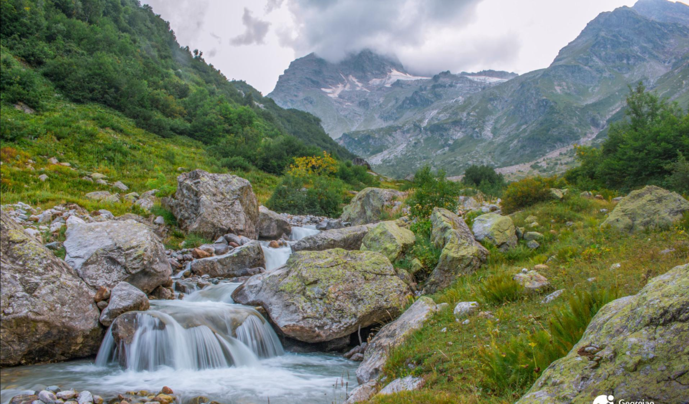

Abkhazia is the extreme southwestern historical province of Georgia. At present, its northern part borders the main watershed gorge of the Great Caucasus, southwards and southwestwards it touches the Black Sea; its northeast border runs on the river Psou and the east border - the Svaneti - Abkhasian Gorge and the river Inguri. The area of the Autonomous  Republic of Abkhazia covers 8.7 thousand square kilometres that are 12.5 % of the territory of Georgia.